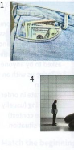
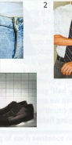
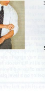
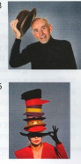

Bài tập
35.1 Những thành ngữ nào khiến bạn nghĩ đến những bức tranh này?
1

2

3

4

5
35.2 Nối mỗi thành ngữ ở cột bên trái với tình huống phù hợp ở cột bên phải mà thành ngữ đó có thể được sử dụng.
- have it in the bag
- wear the trousers
- wear lots of different hats
- in pocket
- give someone the shirt off your back
- keep your shirt on
- Tina là chủ tịch hội học sinh, lớp trưởng và là huấn luyện viên bóng đá tại trường tiểu học của em gái cô ấy.
- Bạn đã bán một chiếc ghế sofa với giá cao hơn £30 so với số tiền bạn đã trả ban đầu.
- Sarah rất hào phóng; cô ấy luôn sẵn lòng giúp đỡ bạn bè bất kể họ cần gì.
- Mark chỉ cần đạt 50% số điểm trong kỳ thi để qua môn, và cậu ấy sẽ thấy việc đó rất dễ dàng.
- Bạn của bạn đang rất tức giận vì đội bóng đá của anh ấy bị thua.
- Martin đưa ra mọi quyết định trong mối quan hệ của mình.
35.3 Sửa lỗi sai trong những thành ngữ này.
- Bài phát biểu của Paul thực sự rất dài và không thú vị lắm. Anh ấy thực sự bored the trousers off mọi người!
- Kỳ thi là ngày mai sao? Bạn tốt nhất nên roll up your shirt và bắt đầu học ngay bây giờ.
- Gary đã hứa sẽ trả lại tiền phòng khách sạn cho tôi, nhưng anh ấy không bao giờ làm vậy. Bây giờ tôi bị hụt mất £80 (outside the pocket).
- Tôi chỉ hy vọng mình có thể trở thành một giáo viên giỏi như thầy Roberts. Tôi có big shoes to walk in.
- Julia đang tập luyện cho môn chạy marathon cùng lúc với việc viết sách. Tôi thực sự take my cap off to cô ấy.
35.4 Viết lại phần gạch chân của mỗi câu bằng một thành ngữ ở trang bên trái.
- Anna nói với tôi rằng cô ấy đã bán xe của bố mẹ chúng tôi với giá £500, nhưng bây giờ tôi phát hiện ra cô ấy was paid £700 and kept the difference.
- Ngay cả sau khi trả tất cả các chi phí, chúng tôi have an extra £75.
- Chị tôi nghĩ rằng mình was definitely going to pass kỳ thi sát hạch lái xe, nhưng sau đó chị ấy đâm vào một chiếc xe khác!
- Tổ chức từ thiện yêu cầu mọi người donate generously để giúp xây dựng một bệnh viện mới.
- Tôi đã gọi cho Beth và cô ấy đến straight away. Cô ấy thậm chí không hỏi vấn đề là gì.